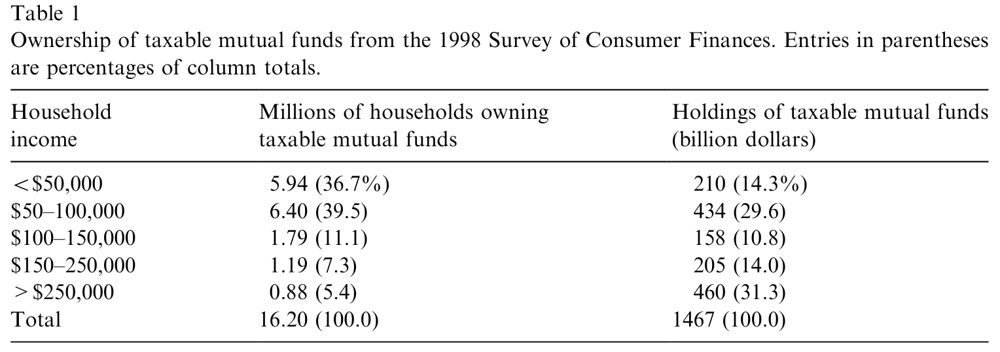
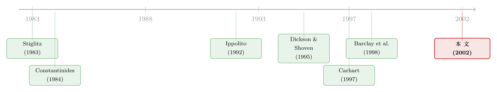

你看见的收益，和你留得住的收益，不是同一个数字
本文读的是 Bergstresser & Poterba (2002, Journal of Financial Economics)：在 1993–1999 年的散户股票型共同基金里，税后收益（after-tax return）比税前收益更能解释基金的后续资金流入；而且，一只基金账面上「还没实现」的资本利得越多，它吸引的净流入反而越少——投资者似乎真的在为那笔尚未到来的税单提前躲闪。
1 一个被所有人默认、却没人验证的前提
研究基金资金流的人，有一个用了二十年的「常识」：钱追着过去的好成绩跑。Ippolito (1992)、Hendricks 等 (1994)、Chevalier 和 Ellison (1997)、Sirri 和 Tufano (1998)、Warther (1995)——一长串名字反复确认了同一件事：去年业绩好的基金，今年就有更多资金涌进来。这个「业绩—资金流」关系，几乎成了共同基金研究的地基。（关于散户「追涨去年收益」这件事本身有多顽固，可参见《钱追着「去年的收益」跑》。）
可是，这条规律里藏着一个谁都没认真追问的前提：这里的「业绩」，指的统统是税前收益（pretax return）。
问题是，对于一个把基金放在应税账户（taxable account）、而非 IRA、401(k) 这类退休账户里的散户来说，他真正拿回家的，从来不是税前收益。基金每年要把股息和已实现的资本利得「穿透」（pass-through）分配给持有人，这些分配当年就要交税。1997 年，美国共同基金的资本利得分配超过了 $180 billion，单这一项就给联邦贡献了至少 $15 billion 的资本利得税。
于是一个自然的问题浮上来：当我们说「投资者追逐好业绩」时，他们追的到底是屏幕上那个亮闪闪的税前数字，还是自己口袋里真正留下的税后数字？
这正是 Bergstresser 和 Poterba 这篇论文要回答的事。听起来像个细节，但它戳中的是整条文献的命门——如果投资者其实在看税后收益，那么过去二十年所有用税前收益做的回归，都把一部分「税」的效应错记成了「业绩」的效应。
2 先把「税后收益」算出来：一个看似简单、其实很拧巴的定义
要检验投资者看不看税后收益，第一步得先有一把尺子，把每只基金的税负量出来。这件事比想象中麻烦。
一只基金一年给不卖出份额的投资者制造三类应税收入：股息（按普通收入征税）、短期已实现资本利得（也按普通收入征税）、长期已实现资本利得（按长期资本利得税率征税）。除此之外，基金净值还会随持仓涨跌产生未实现的资本利得或损失（unrealized capital gains）——这部分当年不征税，但它像一把悬着的剑。
作者把一只基金的税前总收益定义为四个部分之和：
$$ R_p = d + g_s + g_l + u $$
其中 \(d\) 是股息占年初净值的比例，\(g_s\)、\(g_l\) 分别是已实现的短期、长期资本利得，\(u\) 是未实现的资本利得或损失。
接着是这篇文章真正的发力点——税后收益。给一个面对股息/短期税率 \(t_d\)、长期资本利得税率 \(t_{cg}\)、以及未实现利得「有效计提税率」\(t_{ucg}\) 的应税投资者，一年期的（清算前）税后收益是：
整个定义的精髓全在最后那一项 \(u\) 上。未实现的利得今年并不交税——它的税什么时候交、交多少，取决于基金经理将来何时卖、投资者将来何时赎回、以及他用多高的折现率看待未来这笔税。作者把这个有效税率记作 \(t_{ucg}\)，并在大部分实证里取 \(t_{ucg} = 0.10\)，正好是长期资本利得法定税率的一半。这个 0.10 不是拍脑袋来的：Chay 等 (2000) 从封闭式基金折价里反推出的 \(t_{ucg}\)，恰恰非常接近 0.10。
为什么不直接用「税负 ÷ 税前收益」做一个有效税率？因为基金可能出现负收益，分母一负，比率就失去意义。所以作者干脆用税前收益减税后收益，定义一个绝对的税负（tax burden）： $$ T = t_d*(d+g_s) + t_{cg}*g_l + t_{ucg}*u $$ 这就是后面所有回归里那把丈量「税」的尺子。
这里还有一个数据上的妥协值得点明。对于活到 1999 年 1 月的基金，Morningstar 给了长短期资本利得的拆分；但对中途因合并或清算消失的基金，作者只有资本利得分配的总额。要么用一个有幸存者偏差、但税负精确的样本，要么用一个没有幸存者偏差、但税负有测量误差的样本。Elton 等 (1996)、Carpenter 和 Lynch (1999) 都指出，业绩差的基金最容易被合并清算——若只看幸存者，研究持续性会带偏。所以作者主要用全样本，代价是把所有利得都当长期处理（即 \(t_{ucg}\) 那项不变，但 \(g_l\)、\(g_s\) 合并），这就引入了一些税负的测量误差。这是一个很诚实的取舍。
税率的选择同样有讲究：\(t_d = 31\%\)（1998 年已婚联合申报、应税收入 $102,300–$155,950 那档的边际税率），\(t_{cg} = 28\%\)（1993–1997）、20%（1998–1999），\(t_{ucg} = 0.10\)。
凭什么用 31% 这个税率？答案藏在一张表里。
3 谁在持有这些基金？——为 31% 找一个锚
作者用 1998 年的消费者财务调查（Survey of Consumer Finances, SCF）给「代表性基金投资者」画了像。1998 年共有 16.2 million 个家庭持有应税共同基金，其中约四分之三年收入低于 $100,000——但这一大群人只持有全部应税基金资产的 44%。反过来，年收入超过 $250,000 的家庭只占投资者的 5.4%，却握着 31.3% 的应税基金资产。

Table 1: presents summary information on the direct ownership of mutual funds
把资产加权一算，「投资于共同基金的中位数那一美元」，落在一个边际税率 31% 的家庭手里。这正是作者用 31% 的底气——他们要的不是「中位数那个人」，而是「中位数那一块钱」面对的税率。这个区分很关键：基金资产高度集中在富裕家庭，用人头平均会严重低估真实税负。
4 反转：税后收益，确实比税前收益更会「说话」
铺垫到这里，真正的检验登场了。把基金的后续净流入，分别对税前收益和税后收益做回归——谁的解释力更强？
结论是这篇文章的标题式发现：税后收益的解释力胜过税前收益。投资者并不是只盯着那个亮闪闪的税前数字；那些把同样的税前收益、却以「更重税的方式」（更多股息、更多已实现利得）交付给投资者的基金，随后拿到的资金流入，明显少于那些税前收益相近、但税负更轻的基金。换句话说，钱不只追业绩，钱还会绕开税。
这条结论稳健得让人有点意外：不管往回归里加不加一大堆控制变量（其他影响资金流的因素），这个发现都不动摇。
那税负到底有多大、值不值得投资者费心去躲？数据给得很实在。1993–1999 年，股票型基金的平均税前收益是 19.1%/年，而平均税后收益只有 16.0%——一年蒸发掉 3 个百分点。拆开看：未实现资本利得平均 9.8%，股息 0.9%，资本利得分配 8.4%；在前述税率假设下，这套收益结构每年制造 3.2% 的税负（若把 \(t_{ucg}\) 设为零，税负降到 2.2%）。
更要命的是横截面的离散。税负在基金之间差异巨大：75 分位与 25 分位的基金，税负相差 2.5 个百分点。2.5% 是什么概念？它的量级，已经能和基金之间预期收益的差异相提并论了。也就是说，选错了「税效率」，可能比选错了「选股能力」亏得还多。Dickson 和 Shoven (1995) 早就提示过基金税负的巨大异质性，这篇文章用大样本再次确认了它。
5 真正关键的一步：那笔「还没交的税」，也会吓退资金
如果故事到这里就结束，它只是把「业绩—资金流」里的业绩换成了税后版本。但这篇论文真正聪明、也最反直觉的一步，在于把未实现资本利得的存量（俗称资本利得悬挂，capital gains overhang）单独拎出来。
这是一笔你还没交、但迟早可能要替别人交的税。因为基金分配遵循「等额分配规则」：不管你是十年前的老股东还是上周才进场的新股东，每股分到的已实现利得完全一样。于是一个刚买入的投资者，可能要为基金在他进场之前就累积的增值，缴纳未来的资本利得税——哪怕这只基金从他买入那天起再也没涨过。
按 Barclay 等 (1998) 的发现，悬挂越大的基金，净流入越低。本文确认了这一点：控制住过去业绩后，未实现利得存量越大的基金，净流入越小。
但作者在这里插了一段极其克制、也极其重要的提醒——这种对「悬挂」的恐惧，有相当一部分其实是认知误区。
流行的理财建议总警告你「别买未实现利得大的基金，等它分配时你要为没赚到的钱交税」。但作者点破：基金做资本利得分配时，净值会同额下跌，这等于给你创造了一笔与分配额相等的资本损失。一个刚进场就吃到大额分配的投资者，完全可以卖掉份额、实现这笔损失、用它去抵销基金分配的利得。换句话说，分配并不凭空制造名义税负，它只是加速了税款的支付（提高了税的现值），而那把「卖出份额实现亏损」的钥匙，一直就在投资者手里——只是讨论里几乎从不提它。
这层论证让整篇文章的立意更深了一层：投资者确实在为悬挂躲闪，但他们躲闪的东西，在理论上并没有他们以为的那么可怕。这是「感知到的税负」和「真实的税负」之间的一道裂缝。
6 把净流入拆成两半：流入和流出，被税吓退的程度不一样
文献以往只看净流入，因为毛流入、毛流出的数据不好拿。作者从 SEC 文件里把毛流入（gross inflows）和毛流出（gross outflows）抠了出来，于是能问一个更细的问题：一只税负重、悬挂大的基金，是吓退了想进来的人，还是拴住了想出去的人？
答案是两者都有，但方向相反，且力度不对称：一只有大额资本利得悬挂的基金，
- 毛流入更低——对税敏感的投资者绕道走，不愿进场去接那笔悬挂；
- 毛流出也更低——已经在场的投资者不舍得卖，因为一卖就要实现那笔利得、立刻交税，于是被「锁」在了基金里。
而流入效应压过了流出效应——净流入还是减少的。这其实是「资本利得锁定效应（lock-in）」在基金层面的一次干净体现：税收同时冻住了买方和卖方，但冻住买方的力度更大。（同一种「为了避税而扭曲交易时点」的行为，在个人持股层面有更直接的证据，可参见《年底甩亏损，转身又买回》。）
7 文献脉络
这条研究有两条溪流，在这篇论文里汇成一条。
一条是业绩与资金流：从 Ippolito (1992) 起，Hendricks 等 (1994)、Warther (1995)、Chevalier 和 Ellison (1997)、Sirri 和 Tufano (1998) 反复钉死了「资金追业绩」这个事实；Gruber (1996) 进一步指出，因为业绩有持续性，按资金流加权的平均基金收益高于按基金数加权的；而 Carhart (1997) 则把这种持续性的大部分，归因于费用和标的资产收益的持续，而非选股能力的持续。
另一条是税与基金：Stiglitz (1983)、Constantinides (1984)、Dammon 和 Spatt (1996) 研究税收择时；Dickson 和 Shoven (1995) 第一次系统地从「投资者视角」算基金税负，并发现巨大的税负异质性——本文构造税后收益的方法，正是接着他们往下走。Barclay 等 (1998) 则把「资本利得悬挂」和净流入联系起来，Warther (1997) 试图解释基金为何会主动累积未实现利得。

Bergstresser 和 Poterba 站在两条溪流的交汇处：他们把税后收益注入到业绩—资金流这条经典回归里，证明税后收益的解释力胜过税前；又把悬挂拆进毛流入、毛流出，揭开了锁定效应的不对称面孔。
8 评论与延伸（Q&A + 研究方向）
(a) 几个可能的疑问
Q：税后收益解释力更强，会不会只是因为它和税前收益高度相关，统计上「沾了光」？
这正是作者反复用控制变量去防的事。如果税后只是税前的影子，那加入大量其他资金流决定因素后，税后相对税前的优势应该被冲掉；但结论对控制变量的取舍不敏感。更关键的识别来自横截面：两只税前收益相近、但税负相差可达 2.5 个百分点的基金，资金流出现系统差异——这部分差异税前收益根本「看不见」。
Q：投资者真的精明到会算税后收益吗？这听起来不太像散户。
注意作者并没有声称散户在脑子里解 Eq.(2)。资金高度集中在 31% 税率档的富裕家庭手里，这些钱往往有税务顾问、有 Morningstar 的税后数据可看。而且 1999 年起 Vanguard、Morningstar 开始公布税后收益、SEC 随后强制披露——是「被加总好的税后数字」推着钱走，而不是每个散户自己心算。
Q：用 \(t_{ucg} = 0.10\) 是不是太随意？换个值结论会塌吗？
作者明说结果对这个参数相当稳健。
0.10有两重支撑：一是用一系列合理的实现率和折现率算出的有效税率落在这个量级；二是 Chay 等 (2000) 从封闭式基金折价里独立反推出的值「非常接近 0.10」。这是一个被外部证据交叉验证过的取值，不是凑出来的。
Q：既然作者自己论证「悬挂恐惧」部分是误区（可以卖出实现损失对冲），那观察到投资者躲避悬挂，是理性还是非理性？
这恰恰是文章最有张力的地方。投资者的行为（躲避悬挂）是真实的、可测量的；但他们躲避的对象，在理论上并不像直觉那么可怕——分配只加速税款、不制造名义税负，且有对冲手段。所以这更像「感知税负驱动行为」，而真实税负要小一些。把这道裂缝量化，是后续很值得做的题。
Q：幸存者偏差被处理干净了吗？
没有完全干净，作者也不假装干净。为了避免幸存者偏差，主样本用全部交易过的基金、不区分长短期利得，代价是税负有测量误差；区分长短期的精确样本则有幸存者偏差。他们用后者做稳健性（Eq.4、Eq.5），报告两套结果。这是一个透明的取舍，而非掩盖。
Q：这套结论能外推到今天、或外推到债券基金吗？
要谨慎。样本期（1993–1999）是美股大牛市，平均税前收益高达 19.1%，税负的绝对量级被放大；熊市里税负故事会弱很多。样本也只限美国国内股票型基金，明确排除了债券、混合、国际、行业基金——债券基金的税负结构（利息为主、按普通收入征税）完全不同，不能直接套用。
(b) 几个可能的研究问题与提案
1. 把「税后收益—资金流」搬到公司债基金上。 【经济故事】债券基金的应税收入以利息为主，按最高的普通收入税率征税，理论上税负比股票基金更重、也更稳定（不靠资本利得择时）。如果散户对税后收益敏感，债券基金里这个效应应该更强、更干净。 【可行性】中。需要 Morningstar/CRSP 的债券基金收益分解 + 资金流，税率假设比股票更直接（利息税率清晰）。难点在于利率周期会同时驱动收益和流量，要用利率冲击或税改做识别。
2. 用一次联邦资本利得税改做准自然实验。 【经济故事】本文是横截面相关性。若有一次外生的 \(t_{cg}\) 变动（如 1997 年减税从 28% 到 20%），可以做双重差分（difference-in-differences, DiD）：高悬挂基金 vs. 低悬挂基金，在税率下调前后的资金流变化。税率降了，悬挂的「威慑力」应当减弱，高悬挂基金的相对流入应回升。 【可行性】中高。数据现成（基金层面悬挂 + 月度流量），识别来自税改时点的外生性；威胁是减税往往伴随牛市，需控制市场状态与平行趋势检验。
3. 量化「感知税负」与「真实税负」的裂缝。 【经济故事】作者论证悬挂恐惧部分是误区。能不能直接估出投资者为这道认知误区多付/少收了多少？比如，比较「分配前买入」与「分配后买入」的投资者其后的赎回与税务结果，看有多少人没有使用「卖出实现损失」这把钥匙。 【可行性】低到中。需要个人层面的基金交易与税务数据（如某券商的匿名账户面板），难拿；但一旦拿到，识别很干净——同一只基金分配日前后进场的人，是近乎随机的对照。
4. 外资持有人会不会改变基金的税负行为？ 【经济故事】不同税收居民身份的持有人，对资本利得分配的税敏感度天差地别（很多外国投资者对美国资本利得免税）。一只基金若外资份额上升，经理是否更敢于实现利得、做更高换手？这会把「税负—资金流」的因果链反过来——持有人结构决定基金的税效率。 【可行性】中。需要基金层面的持有人税籍构成（13F 难拆居民身份，可用份额类别或离岸 feeder 结构近似），识别有挑战，但机制清晰、方向新颖。
9 我的判断
这篇论文的贡献，是把一个被默认了二十年的前提——「资金追的是税前业绩」——翻出来，证明它其实是个错误的简化。它做得最漂亮的两件事：一是用 SCF 把「代表性投资者税率」从『中位数那个人』校准到『中位数那一块钱』，给 31% 找了个硬锚；二是把净流入拆成毛流入、毛流出，揭示了资本利得悬挂的不对称锁定——这是只看净流量永远看不到的。而那段「悬挂恐惧部分是误区」的论证，更让它从一篇实证回归升格为一篇有思想的文章。
对识别的担忧也很实在。核心结果本质上是横截面相关性：税后收益与资金流的关系，做不到双重差分那种因果干净度。税前与税后高度共线，作者靠控制变量和横截面离散来分离，但读者有理由想要一次外生的税率冲击来钉死因果（见上面提案 2）。此外，样本期是罕见的大牛市，税负绝对量级被放大，外推到平时要打折扣；幸存者偏差也只是被「透明地权衡」、而非被消除。
后续我最想看到的，是把这套框架接到因果实验和持有人结构上：用一次税改 DiD 验证悬挂的威慑力随税率而动，再用持有人税籍把因果链反过来问——到底是税负塑造了资金流，还是资金（持有人）的税性塑造了基金的税负行为。对做信用市场和外资持有人的人来说，第三、第四个方向尤其值得一试。
参考文献
Barclay, M., Pearson, N., Weisbach, M. (1998). Open end mutual funds and capital gains taxes. Journal of Financial Economics 49, 3–43.
Carhart, M. (1997). On persistence in mutual fund performance. Journal of Finance 52, 57–82.
Carpenter, J., Lynch, A. (1999). Survivorship bias and attrition effects in measures of performance persistence. Journal of Financial Economics 54, 337–374.
Chay, J., Choi, D., Pontiff, J. (2000). Market valuation of tax-timing options: evidence from capital gains distributions. Working paper, University of Washington.
Chevalier, J., Ellison, G. (1997). Risk taking by mutual funds as a response to incentives. Journal of Political Economy 105, 1167–1200.
Constantinides, G. (1984). Optimal stock trading with personal taxes: implications for prices and the abnormal January returns. Journal of Financial Economics 13, 65–89.
Dammon, R., Spatt, C. (1996). The optimal trading and pricing of securities with asymmetric capital gains taxes and transaction costs. Review of Financial Studies 9, 921–952.
Dickson, J., Shoven, J. (1995). Taxation and mutual funds: an investor perspective. In: Poterba, J. (Ed.), Tax Policy and the Economy, Vol. 9. MIT Press, 151–181.
Elton, E., Gruber, M., Blake, C. (1996). Survivorship bias and mutual fund performance. Review of Financial Studies 9, 1097–1120.
Gruber, M. (1996). Another puzzle: the growth in actively managed mutual funds. Journal of Finance 51, 783–810.
Hendricks, D., Patel, J., Zeckhauser, R. (1994). Investment flows and performance: evidence from mutual funds, cross-border investments, and new issues. In: Japan, Europe, and International Financial Markets. Cambridge University Press.
Ippolito, R. (1992). Consumer reaction to measures of poor quality: evidence from the mutual fund industry. Journal of Law and Economics 35, 45–70.
Poterba, J. (1999). Unrealized capital gains and the measurement of after-tax portfolio performance. Journal of Private Portfolio Management 1, 23–34.
Sirri, E., Tufano, P. (1998). Costly search and mutual fund flows. Journal of Finance 53, 1589–1622.
Stiglitz, J. (1983). Some aspects of the taxation of capital gains. Journal of Public Economics 21, 257–294.
Warther, V. (1995). Aggregate mutual fund flows and security returns. Journal of Financial Economics 39, 209–236.